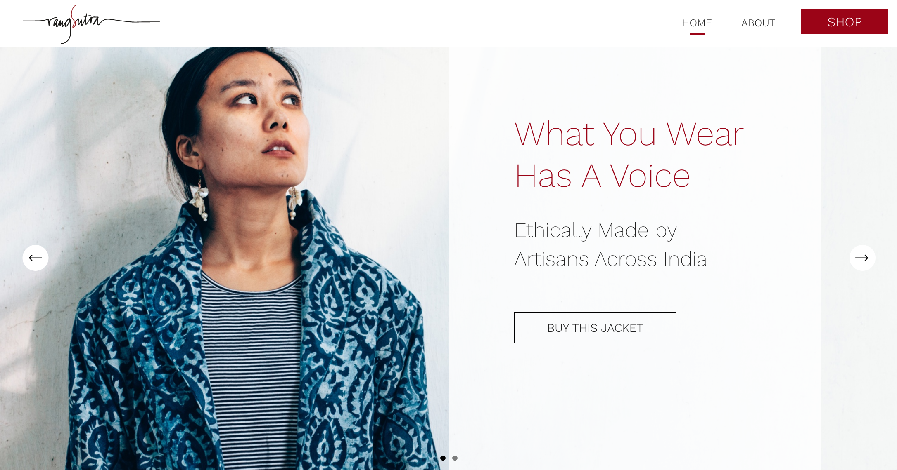

Website redesign for a maternal health organization in Mumbai
UX design
Design research
Content strategy

Rangsutra Crafts is a cooperative that works with and supports the livelihoods of over 3,000 artisans across India. During my time at Studio Subu, Rangsutra came to us looking to create an e-commerce store that showcased both their products and social impact mission. I led design research, UX design (desktop and mobile), and content strategy for the project.
Read full case study